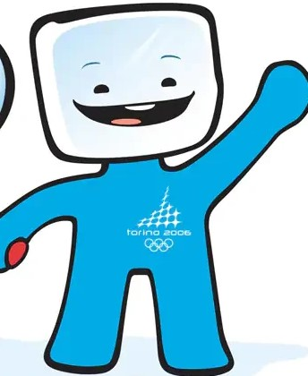

返回
吉祥物
关于吉祥物
1968年以来，奥运会吉祥物扮演了重要角色。它们承载着具象化奥林匹克精神的重任，传递每届奥运会的核心价值观；推广主办城市的历史和文化；为活动增添节日氛围。
冰墩墩
第24届北京冬奥会
冰墩墩以熊猫为原型，象征冬奥会运动员强壮的身体、坚韧的意志和鼓舞人心的奥林匹克精神。
了解更多
Soohorang 白虎
第23届平昌冬奥会
Soohorang不仅具备挑战精神和热情，同时还是一位值得信任的伙伴，保护着冬奥会参与者。
了解更多
野兔
第22届索契冬奥会
野兔是文化融合的象征，在俄罗斯兔子有负面的象征意，但是在国际上，她可爱、温顺并灵动。
了解更多
白熊
第22届索契冬奥会
熊被称作俄罗斯民族的图腾，吉祥物“北极熊”在很大程度上彰显举办国的传统文化。
了解更多
雪豹
第22届索契冬奥会
雪豹帅气矫健的身姿，象征着“壮硕、强健、速度快且优美”，贴近体育比赛。
了解更多
Quatchi 魁特奇
第21届温哥华奥会
魁特奇是当地传说中非常受欢迎的森林大脚野人角色。它浑身覆盖厚皮毛，脚踩雪地靴，头戴耳罩。
了解更多
Miga 米加
第21届温哥华奥会
米加的形象是神兽海熊，是逆戟鲸和白灵熊合体。白灵熊只生活在不列颠哥伦比亚省。
了解更多
Neve 内韦
第20届都灵冬奥会
内韦是一个身披红色的雪球造型，具有流线型、圆润的轮廓，让人们联想到动作的和谐和优雅。
了解更多

Gliz 格利兹
第20届都灵冬奥会
格利兹是身披蓝色的冰块造形，棱角分明的头部和平滑的身体相结合，让人们联想到运动员的力量。
了解更多
Powder 雪靴兔
第19届盐湖城冬奥会
雪靴兔象征的犹他州的白雪，同时体现了奥林匹克运动口号中的“更快”。
了解更多
Coal 美洲黑熊
第19届盐湖城冬奥会
美洲黑熊象征的犹他州的煤矿业，同时体现了奥林匹克运动口号中的“更强”。
了解更多
Copper 草原小狼
第19届盐湖城冬奥会
北美草原小狼象征的犹他州的铜业，同时体现了奥林匹克运动口号中的“更高”。
了解更多
Sukki 寸喜
第18届长野冬奥会
雪地猫头鹰寸喜也称为Snowlets，名字对应其中的snow。寸喜代表火，
了解更多
Nokki 能城
第18届长野冬奥会
雪地猫头鹰能城也称为Snowlets，名字对应其中的snow。能城代表空气。
了解更多
Lekki 家喜
第18届长野冬奥会
雪地猫头鹰家喜也称为Snowlets，名字对应其中的lets。家喜代表土。
了解更多
Tsukki 都木
第18届长野冬奥会
雪地猫头鹰都木也称为Snowlets，名字对应其中的lets。都木代表水。
了解更多
Haakon 哈康
第17届利勒哈默尔冬奥会
哈康名字的由来是曾任挪威国王的哈康四世，而克里斯汀来自当时的公主。
了解更多
Kristin 克里斯汀
第17届利勒哈默尔冬奥会
哈康和克里斯汀是两个欢乐衣着中世纪服装，但充满现代观念的儿童形象。
了解更多
Magique 魔法
第16届阿尔贝维尔冬奥会
Magique是一个立体星星形状的小魔鬼造型，象征着梦想和想象力。
了解更多
Hidy 海迪
第15届卡尔加里冬奥会
海迪是豪迪的妹妹，“Hidy”是“hi”的扩展,表达卡尔加里地区人民的热情好客。
了解更多
Howdy 豪迪
第15届卡尔加里冬奥会
“Howdy”是典型的西式问候语“How do you do”的缩写,表达卡尔加里地区人民的热情好客。
了解更多
Vučko 武科
第14届萨拉热窝
武科通过或微笑、或惊恐、或严肃的丰富面部表情赋予狼更加友善的一面，象征着勇气、力量以及冬天。
了解更多
Roni 罗尼
第13届普莱西德湖冬奥会
浣熊的面部特征和眼睛周围的黑色设计是致敬戴太阳镜和帽子参加冬季运动的选手们。
了解更多
Schneemandl 雪人
第12届因斯布鲁克冬奥会
圆滚滚的雪人，戴着泰洛尔人帽子，加上胡萝葡红红的鼻子，造型非常讨人喜欢；象征着纯洁的奥运会。
了解更多
Schuss 雪士
第10届格勒诺布尔冬奥会
Schuss有着半人半物的卡通形象，像一个意志坚强的小精灵，开创整个奥林匹克吉祥物的先河。
了解更多